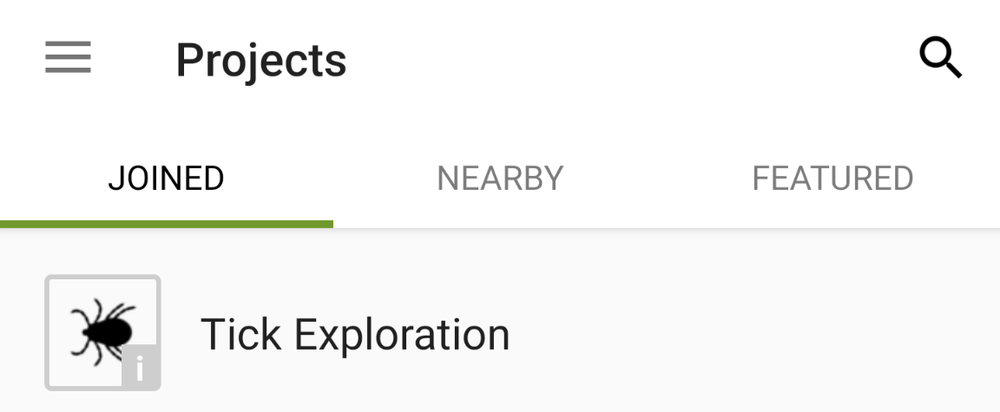

How to join the Tick Exploration iNaturalist Project
On a Computer
1. Sign up for an iNaturalist account
2. Click "Join" on the Tick Exploration project page
3. Find some ticks!
On Mobile
1. Download the app
2. Sign up
3. Click the hamburger button (three lines / dots) and click projects
4. Search for "tick exploration" and tap the project

5. Click "Join"
6. Find some ticks!